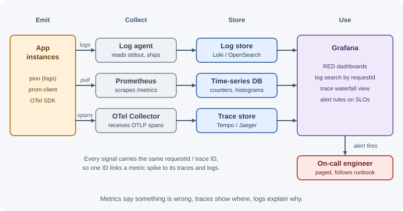
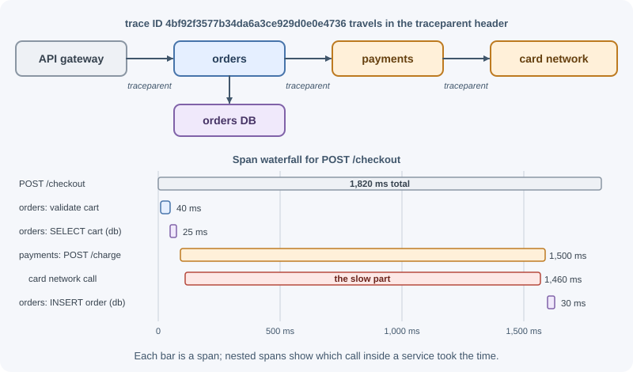

Logging, Monitoring, and Tracing¶
Once a backend runs in production, you can no longer attach a debugger and watch it. Logs, metrics, and traces are how you see what it is doing: logs record individual events, metrics summarize behavior as numbers over time, and traces follow a single request across services. Together they are called observability — the ability to understand a system's internal state from the data it emits.
Why it matters¶
Questions you will need to answer in production:
- A customer says checkout failed at 14:32. What happened to their request?
- Is the API slower today than last week? For everyone, or one endpoint?
- Error rates doubled after the last deploy. Which change caused it?
- The database is at 95% CPU. Which service is sending the load?
- Are we meeting the reliability we promised customers?
Without good logs, metrics, and traces, every incident becomes guesswork. With them, you find problems before users report them, fix them faster, and make capacity and performance decisions from data.
Real-world usage¶
- Google SRE's four golden signals. Google's Site Reliability Engineering book says that if you can only measure four metrics of a user-facing system, measure latency, traffic, errors, and saturation (Google SRE book: Monitoring distributed systems).
- Prometheus at SoundCloud. The Prometheus monitoring and alerting toolkit was originally built at SoundCloud in 2012 and is now an independent open-source project (Prometheus: overview).
- Distributed tracing at Uber. Jaeger was released as open source by Uber Technologies in 2016 to monitor distributed workflows and find performance bottlenecks, and was later donated to the CNCF (Jaeger documentation).
- Cheaper logs at Grafana Labs. Grafana Loki does not index the contents of log lines; it indexes only labels for each log stream, which is what keeps it cost-effective at scale (Grafana Loki: overview).
Popular tools and providers: Prometheus and Grafana, Grafana Loki and Tempo, Jaeger, the ELK / OpenSearch stack, OpenTelemetry, and hosted platforms such as Datadog, New Relic, Honeycomb, and AWS CloudWatch.
How it works¶
The three pillars¶
| Signal | What it is | Good for | Example |
|---|---|---|---|
| Logs | Timestamped records of discrete events | Details of what happened in a specific case | order 812 failed: card declined |
| Metrics | Numeric measurements aggregated over time | Trends, dashboards, alerts | http_requests_total{status="500"} = 42/min |
| Traces | The path of one request through services, as timed spans | Finding where time is spent across services | Checkout 1.8 s: payment call 1.5 s |
They complement each other: a metric alert tells you error rates are up; a trace shows which service is failing; logs show the exact error.

Log levels¶
| Level | Use it for | Production default |
|---|---|---|
trace |
Extremely detailed step-by-step flow | Off |
debug |
Diagnostic detail useful while developing or investigating | Usually off; enable temporarily |
info |
Normal significant events: server started, job completed, user signed up | On |
warn |
Something unexpected that the system handled: retry succeeded, deprecated API used, slow query | On |
error |
An operation failed and needs attention: request failed with 500, job failed after retries | On, alertable |
fatal |
The process cannot continue and is about to exit | On, alert |
Choose levels deliberately. If everything is error, nothing is; if routine
validation failures are logged as error, real problems get lost.
Structured logging¶
Plain text logs are hard to search and parse:
2026-11-07 14:32:10 Order 812 failed for user 42 after 3 attempts
Structured logs are JSON objects with consistent fields that log systems can index and filter:
{"level":"error","time":"2026-11-07T14:32:10.512Z","msg":"order failed",
"orderId":"812","userId":"42","attempts":3,"requestId":"req_7f3a9c",
"err":{"type":"CardDeclinedError","message":"Card declined"}}
Now you can query "all errors for orderId 812" or "count of
CardDeclinedError per hour" without regular expressions.
In Node.js, pino is a fast, widely used structured logger. It writes JSON to standard output; the platform (container runtime, log agent) ships it to a central system. Apps should not manage log files themselves in containerized environments — write to stdout and let the infrastructure collect it.
What to log¶
- Requests: method, route, status, duration, request ID (often one line per request).
- Significant business events: sign-up, order placed, payment failed.
- Errors with stack traces and cause chains.
- Calls to external services that fail or are slow.
- Security events: sign-ins, failed sign-ins, permission denials, password and MFA changes.
- Startup configuration (non-secret values) and shutdown.
What never to log¶
- Passwords, password reset tokens, MFA codes.
- Access tokens, refresh tokens, session IDs, API keys, cookies,
Authorizationheaders. - Secrets, connection strings, private keys.
- Full payment card numbers and similar regulated data.
- Unnecessary personal or health data — log an ID, not the record.
Use your logger's redaction feature to remove known sensitive fields automatically, and review what request/response logging captures. Logs are often kept for months and accessed by many people; treat them as sensitive.
Correlation and request IDs¶
A request ID (correlation ID) is generated when a request enters the
system (or taken from an incoming header such as X-Request-Id set by the
load balancer), attached to every log line for that request, returned to the
client in a response header, and forwarded to downstream services. You
can then search one ID and see every log line from every service involved.
Client ─► API gateway ──(X-Request-Id: req_7f3a9c)──► Orders ──► Payments
│ │ │
└──────── all log lines carry requestId=req_7f3a9c ───┘
In modern systems, the W3C traceparent header (from distributed tracing)
often serves the same purpose.
Log aggregation¶
With many instances, logs must be collected centrally:
- ELK / OpenSearch stack: agents (Beats, Fluent Bit) ship logs to Elasticsearch or OpenSearch; Kibana or OpenSearch Dashboards search them.
- Grafana Loki: indexes labels rather than full text; cheaper at scale; queried with LogQL in Grafana.
- Cloud services: AWS CloudWatch Logs, Google Cloud Logging, Azure Monitor.
- Commercial platforms: Datadog, New Relic, Splunk, and others.
Set retention periods deliberately — logs cost money to store and may be subject to data-protection rules.
Metrics¶
Metric types:
- Counter: only goes up (resets on restart). Requests served, errors, jobs processed. You usually look at its rate.
- Gauge: goes up and down. Memory in use, queue length, active connections.
- Histogram: counts observations in buckets. Request durations; lets you compute percentiles.
Two standard methods for choosing what to measure:
- RED (for services): Rate (requests per second), Errors (failed requests per second), Duration (latency distribution).
- USE (for resources like CPU, disks, pools): Utilization, Saturation (queued work), Errors.
Percentiles¶
Averages hide pain. If 99 requests take 50 ms and one takes 5 seconds, the average is about 100 ms, which looks fine. Percentiles describe the distribution:
- p50 (median): half of requests are faster than this.
- p95: 95% are faster; 1 in 20 is slower.
- p99: 1 in 100 is slower — often your most active users, since they make the most requests.
Track p50, p95, and p99 latency per endpoint, and alert on tail latency, not the average.
Prometheus (with Grafana for dashboards) is a widely used open-source metrics stack; cloud providers and APM tools offer managed equivalents.
Dashboards and alerting¶
- Dashboards show the RED metrics per service, resource usage, dependency health, and business metrics (orders per minute).
- Alerts should fire on symptoms users feel — error rate, latency, availability — rather than every internal cause. Each alert should be actionable, have a clear owner, and link to a runbook.
- Avoid alert fatigue: noisy alerts that fire constantly get ignored, including the important one.
Distributed tracing¶
In a system with many services, one user request may touch ten of them. A trace records that whole journey:
- A trace is the full tree of work for one request, identified by a trace ID.
- A span is one timed operation within it (an HTTP handler, a database query, an outbound call), with a start time, duration, attributes, and a parent span.
- Context propagation passes the trace ID and parent span ID to
downstream services, usually in the W3C
traceparentheader.

OpenTelemetry is the vendor-neutral standard for producing traces, metrics, and logs. Its Node.js SDK can auto-instrument common libraries (HTTP, Express, database drivers) and export to many backends (Jaeger, Grafana Tempo, Zipkin, cloud and commercial APMs).
Health checks¶
Health endpoints let load balancers and orchestrators route traffic only to healthy instances:
- Liveness (
/livez): is the process running and not stuck? If it fails, the orchestrator restarts the instance. Keep it simple — do not check dependencies here, or a database blip restarts every instance. - Readiness (
/readyz): can this instance serve traffic right now (started, connected to required dependencies, not shutting down)? If it fails, traffic is routed elsewhere but the instance is not killed.
SLI, SLO, SLA, and error budgets¶
- SLI (service level indicator): a measured quantity of service quality, such as "percentage of requests that succeed in under 300 ms."
- SLO (service level objective): the target for an SLI, such as "99.9% of requests succeed in under 300 ms over 30 days."
- SLA (service level agreement): a contract with customers, with consequences (credits, refunds) if missed. SLAs are usually looser than internal SLOs.
- Error budget: the allowed unreliability implied by the SLO. A 99.9% monthly SLO allows about 43 minutes of failure in 30 days. If the budget is spent, the team prioritizes reliability over new features.
When to use and when not to use¶
Every production service needs logs and metrics. Tracing and SLOs depend on the system's size.
Use each signal for its job:
- Logs for the details of one event: what failed for this request, with which IDs.
- Metrics for trends and alerts: rates, error ratios, latency percentiles, saturation.
- Traces when a request crosses several services, queues, or databases and you need to know where the time went.
You may not need yet:
- Distributed tracing for a single service with one database — request logs with durations are often enough.
- Formal SLOs and error budgets before you have real users and a clear idea of what "good" means.
Avoid:
debuglogging permanently on in production.- Alerts on internal causes (CPU at 80%) that do not affect users.
| Question | Best signal |
|---|---|
| Why did this specific checkout fail? | Logs, found by request ID |
| Is the error rate higher than last week? | Metrics |
| Which downstream call made checkout slow? | Traces |
| Should someone be woken up now? | Alerts on symptom metrics or SLO burn rate |
| Are we keeping our reliability promise? | SLIs measured against an SLO |
Practical examples¶
Structured request logging with pino in Express¶
import express from "express";
import pino from "pino";
import pinoHttp from "pino-http";
import { randomUUID } from "node:crypto";
const logger = pino({
level: process.env.LOG_LEVEL ?? "info",
// Remove sensitive values wherever they appear in logged objects
redact: ["req.headers.authorization", "req.headers.cookie", "*.password"],
});
const app = express();
app.use(
pinoHttp({
logger,
// Reuse the incoming request ID or create one
genReqId: (request, response) => {
const id = request.get("x-request-id") ?? randomUUID();
response.setHeader("x-request-id", id);
return id;
},
})
);
app.get("/api/orders/:id", async (request, response) => {
// request.log is a child logger that already includes the request ID
request.log.info({ orderId: request.params.id }, "fetching order");
response.json({ id: request.params.id });
});
app.listen(3000, () => logger.info({ port: 3000 }, "server started"));
Recording RED metrics with prom-client¶
import client from "prom-client";
const httpDuration = new client.Histogram({
name: "http_request_duration_seconds",
help: "HTTP request duration in seconds",
labelNames: ["method", "route", "status"],
buckets: [0.01, 0.05, 0.1, 0.3, 0.5, 1, 2, 5],
});
app.use((request, response, next) => {
const stopTimer = httpDuration.startTimer();
response.on("finish", () => {
stopTimer({
method: request.method,
// Use the route pattern, not the raw URL, to keep label values bounded
route: request.route?.path ?? "unmatched",
status: response.statusCode,
});
});
next();
});
// Prometheus scrapes this endpoint (protect or expose it internally only)
app.get("/metrics", async (request, response) => {
response.type(client.register.contentType);
response.send(await client.register.metrics());
});
Liveness and readiness endpoints¶
let shuttingDown = false;
app.get("/livez", (request, response) => response.sendStatus(200));
app.get("/readyz", async (request, response) => {
if (shuttingDown) return response.sendStatus(503);
try {
await db.command({ ping: 1 }); // required dependency
response.sendStatus(200);
} catch {
response.sendStatus(503);
}
});
process.on("SIGTERM", () => {
shuttingDown = true; // stop receiving new traffic before closing
});
Best practices¶
- Log structured JSON to stdout; let the platform collect and ship it.
- Use log levels consistently; keep
debugoff in production by default. - Attach a request/trace ID to every log line and propagate it downstream.
- Redact secrets and sensitive data automatically; review request logging.
- Measure RED for every service and USE for key resources.
- Alert on user-visible symptoms using percentiles, with runbooks attached.
- Keep metric label values bounded (route patterns, not raw URLs or user IDs) to avoid high-cardinality explosions.
- Instrument with OpenTelemetry to avoid vendor lock-in.
- Separate liveness from readiness.
- Define SLOs and use error budgets to balance reliability and features.
In production¶
- The metrics system runs out of memory. Symptom: Prometheus becomes
slow or crashes, and dashboards time out. Detect: the number of active
time series climbs steadily after a deploy. Cause: a label with unbounded
values — the raw URL (
/api/orders/8123) instead of the route pattern, or a user ID. Fix: label by route pattern and status class, and drop the bad label at scrape time while the code is fixed. - A database blip restarts every pod. Symptom: a short database outage becomes a full outage. Detect: Kubernetes events show "Liveness probe failed" on all pods at once. Cause: the liveness probe checks the database, so every instance is killed together. Fix: liveness checks only that the process responds; dependency checks go in the readiness probe.
- Secrets end up in the log store. Symptom: a security review finds
bearer tokens or passwords in log search. Detect: search the logs for
Beareror"password". Cause: whole request headers or bodies were logged without redaction. Fix: configure redaction paths, add a test that checks them, and rotate every credential that leaked. - Traces stop at the first service. Symptom: the trace view shows the
API's spans, but downstream work appears as separate, unconnected traces.
Detect: child services have spans with no parent. Cause:
traceparentis not propagated — a custom HTTP client, or a message queue that does not carry trace context. Fix: use OpenTelemetry instrumentation for HTTP clients and inject trace context into message headers. - The on-call engineer ignores pages. Symptom: a real incident is noticed late. Detect: many alerts per week that needed no action. Cause: alerts on causes (CPU, memory) rather than user-visible symptoms. Fix: alert on error rate, latency percentiles, or SLO burn rate, and attach a runbook to every alert.
Important terminology¶
- Observability: understanding a system's internal state from its outputs.
- Structured log: a log entry with machine-readable fields, usually JSON.
- Log level: the severity of a log entry.
- Correlation ID: an ID linking all events of one request.
- Counter / gauge / histogram: metric types for increasing totals, current values, and distributions.
- RED / USE: rate-errors-duration and utilization-saturation-errors methods.
- Percentile (p95, p99): the value below which that percentage of observations fall.
- Trace / span: a request's full journey / one timed operation in it.
- Context propagation: passing trace identifiers between services.
- OpenTelemetry: an open standard and toolkit for traces, metrics, and logs.
- Liveness / readiness probe: checks for "restart me" versus "send me traffic."
- SLI / SLO / SLA: indicator, objective, and agreement for service quality.
- Error budget: the amount of failure an SLO allows.
- Cardinality: the number of unique label combinations in a metric.
Common mistakes and misconceptions¶
- Logging secrets or tokens, especially by logging whole request headers or bodies.
- Unstructured, inconsistent log messages that cannot be queried.
- Everything at
errorlevel, which hides real errors. - Monitoring averages instead of percentiles.
- Alerting on causes (CPU 80%) instead of symptoms (latency, errors).
- Liveness probes that check the database, causing mass restarts when it blips.
- Using user IDs or full URLs as metric labels, creating millions of time series.
- "We have logs, so we have observability." Without metrics and traces, trends and cross-service latency are hard to see.
Revision questions¶
- What different questions do logs, metrics, and traces answer?
- Why is structured logging preferred over plain-text log lines?
- List five things that should never appear in logs.
- Explain the RED method and why p99 latency matters more than the average.
- What is the difference between a trace and a span, and how does context propagation work?
- How do liveness and readiness checks differ, and why should liveness not check dependencies?